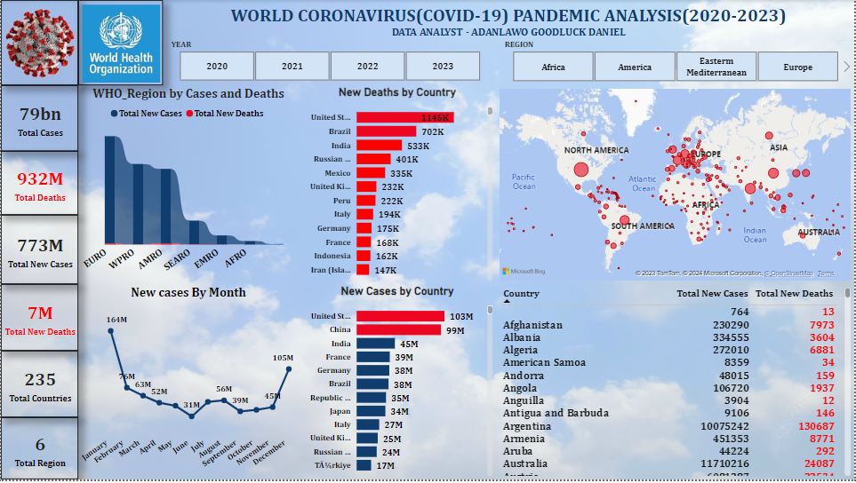
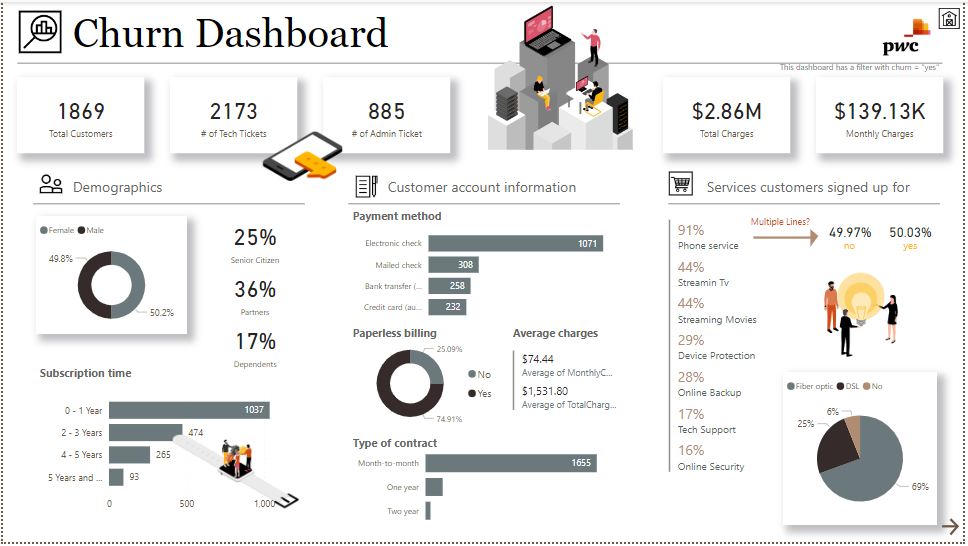
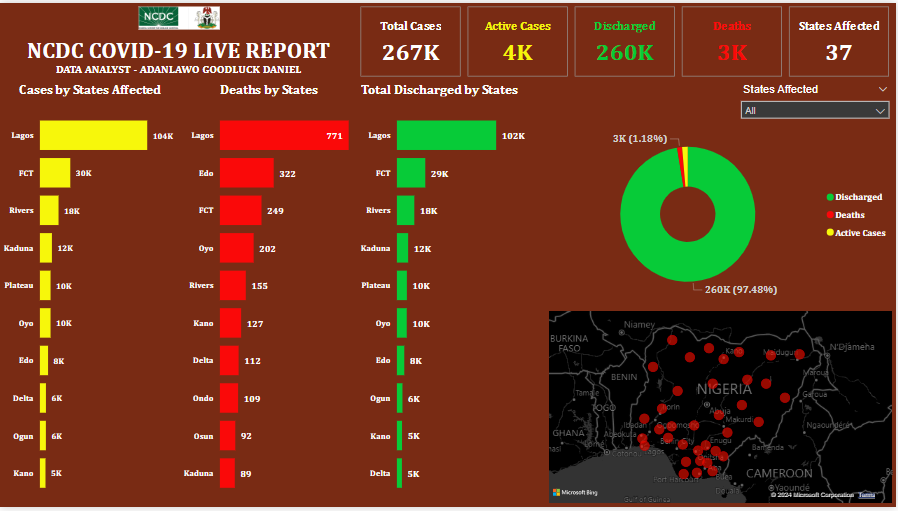
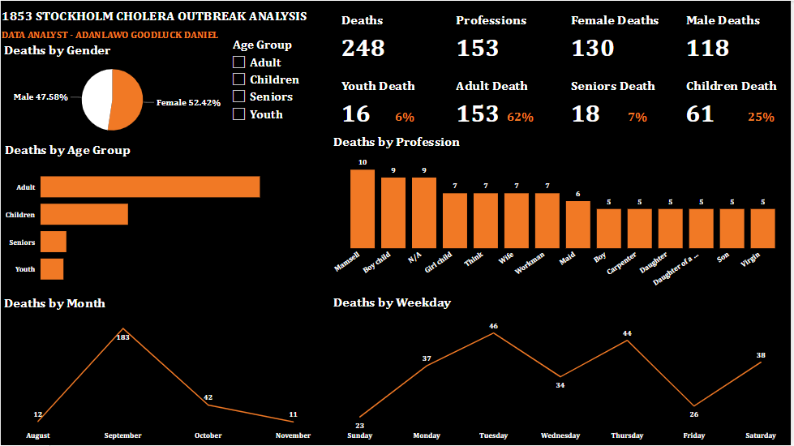
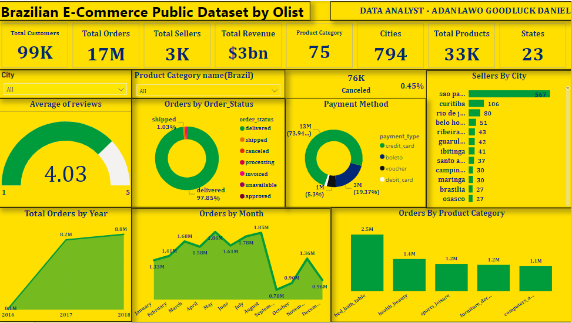

Here is a presentation on the COVID-19 Global report (as of 5th January, 2024). The dataset used was gotten from the WHO website and visualization was performed using PowerBI.
My analysis covered total confirmed cases, cumulative death, new cases and death in the last 24 hours, total vaccination, death by country, vaccination trend by year, vaccination by country, and death by country.

The analysis is on COVID-19 impact on Airport traffic from 1st Feb to 15th March 2020 in four(4) Countries namely: The United States of America, Canada, Australia, and Chile.
The dashboard shows traffic to and from the Airports during the baseline period (1st Feb - 15th March 2020)

A dashboard for call centre trends which is used as basis of discussion with Management

Customers in the telecom industry are hard-earned: we don’t want to lose them
The retention department is here to get customers back in case of termination
Currently, we get in touch after they have terminated the contract, but this is reactionary: it would be better to know in advance who is at risk. This report shows the full churn and risk Analysis

Business case Problem
Create visualizations to represent HR data, particularly focusing on gender-related KPIs.
Identify and discuss potential root causes for the slow progress in achieving gender balance at the executive management level.

The dataset used in building this dashboard contains the records for 5,000,000+ commercial airline flights in 2015. Each record in the dataset represents a single flight, including the airline name, flight number, origin/destination airport and flight distance, as well as scheduled/actual departure and arrival times.

One of the most beautiful things about data analysis and visualization is being able to discover trends in a particular business without making assumptions. This is my visual representation of the (2017-2020) NYC Taxi Trips.
Key Insights:
✪ A total number of 26 million taxi trips were recorded.
✪ Saturdays were the busiest weekdays in terms of pickup.
✪ Evenings were the busiest times of the day for the drivers.
✪ More revenue was generated from credit card payments.
✪ April had the record for the highest number of trips.

Nigeria, like many other countries, has been significantly impacted by the COVID-19 pandemic. Here are some key points regarding COVID-19 in Nigeria
KPIs:
✪ Total Cases = 267k
✪ Discharged Cases =260k
✪ Active Cases = 4k
✪ Deaths = 3k
✪ States Affected = 37

It was a dark period, an unforgettable experience, the entire city of Stockholm Sweden in 1853 was brought to a standstill by a deadly infectious strain of Vibrio cholerae.
✪ A Total of 248 Death were recorded during the outbreak
✪ At 183, September had the highest Total Death and was 1,563.64% higher than November, which had the lowest Total Death at 11.
✪ The Age group with highest record of Death is the Adult (62%) and Children (25%)
✪ September accounted for 73.79% of Total Deaths.
✪ 130(52%) Female Deaths were Recorded and 118(48%) of Male Deaths were Recorded.

This is a Brazilian E-commerce public dataset of orders made at Olist Store. It has information on 17M orders from 2016 to 2018 made at multiple marketplaces in Brazil. Its features allow viewing an order from multiple dimensions: from order status, price, payment and freight performance to customer location, product attributes and finally reviews written by customers.

This dataset contains the Consumptionof energy by 10 companies, The Analysis can be viewed only for people who has Microsoft powerBI service account.

This dashboard shows a comprehensive overview of the space mission analysis carried out between 1957 and 2022 and visualize the amazing History of space travel.

Unicorn companies refer to privately held startups that have achieved a valuation of over $1 billion. The term "unicorn" was coined to highlight the rarity of such high-valued startups, emphasizing their uniqueness in the business world.
This Analysis spans from year 1900 to 2021